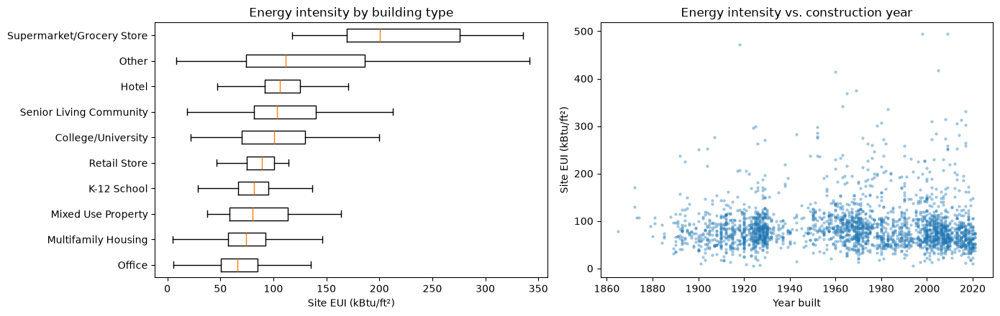
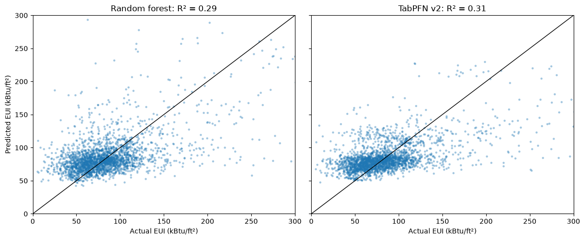
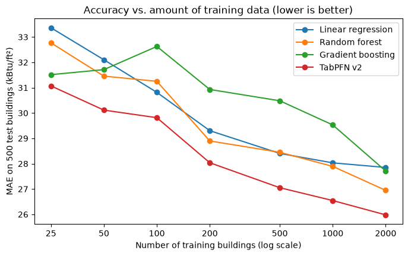
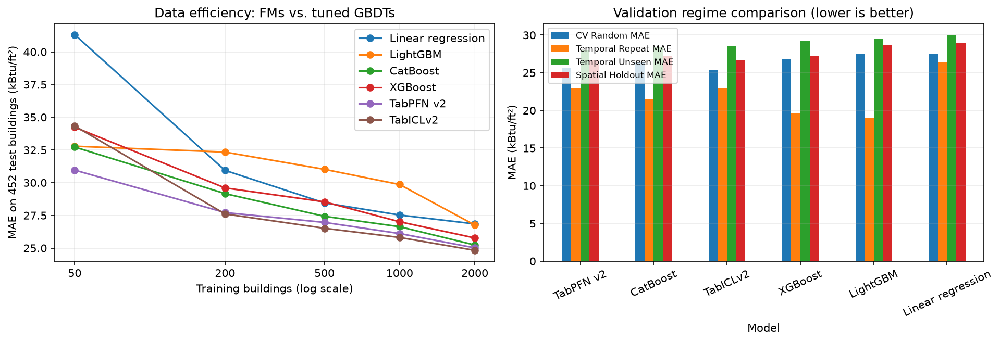

Module 2 · Tabular foundation models
Estimate the energy use of buildings you have no meter data for
Building stock models often have a registry (type, floor area, year built, location) for every building, but measured energy use for only some of them. We fill that gap with TabPFN v2, a foundation model for tables, and compare it with the classic machine-learning models you would normally reach for.
- Energy question
- Site EUI per building
- Model
- TabPFN v2 (Prior Labs)
- Data
- Chicago Energy Benchmarking 2022
- Runtime (GPU)
- ≈ 105 s, cached
Learning without training
A random forest trains: it adjusts its trees until they fit your rows. TabPFN was pretrained once, on millions of synthetic tables, for one general skill: "given some rows with answers, predict the answer for new rows". On your data it does not change its weights. You hand it your known rows and the new rows together, and it predicts in a single forward pass of a transformer. This is in-context learning, the same idea as giving a chatbot a few examples in the prompt.
| Random forest, gradient boosting | TabPFN | |
|---|---|---|
| Learns from your data by | fitting parameters | reading rows as context |
.fit() | does the real work | mostly stores the data |
.predict() | fast | does the real work (GPU helps) |
| Hyperparameter tuning | often needed | usually not needed |
| Sweet spot | any size | up to ~10,000 rows, ~500 columns |
Choosing features: the leakage trap
Large Chicago buildings (over 50,000 ft²) must report their yearly energy use. After cleaning, 2,532 buildings remain. The target is site EUI in kBtu/ft² (1 kBtu/ft² ≈ 3.15 kWh/m²).
The table also contains electricity use, gas use, ENERGY STAR score and GHG intensity. They are all calculated from the measured energy use, the very thing we want to predict. Using them gives a near-perfect score in testing and a useless model in practice, because for an unmetered building you will not have them. Only use what you would know before measuring.
We keep only registry-type facts: building type (rare types grouped into "Other"), log floor area, year built, number of buildings, latitude and longitude.

TabPFN is a drop-in scikit-learn model
It has the usual fit / predict interface, so it slots into any existing scikit-learn workflow, including cross-validation:
from tabpfn import TabPFNRegressor
from tabpfn.constants import ModelVersion
model = TabPFNRegressor.create_default_for_version(ModelVersion.V2, device="cuda")
model.fit(X_train, y_train) # stores the known buildings as context
y_pred = model.predict(X_test) # one transformer pass: the actual workWe use v2 because its weights are open (Prior Labs License, Apache 2.0 with attribution) and download without registration. Newer versions (2.5+) are more accurate but need a free Prior Labs account and are for non-commercial use.
Cross-validated results
5-fold cross-validation: every building is predicted once by a model that never saw it. The classic models use library defaults, and TabPFN gets no tuning either.
| Model | MAE (kBtu/ft²) | R² | Stock energy bias | Time, 5 folds |
|---|---|---|---|---|
| Average (baseline) | 30.6 | 0.00 | +1.98% | 0.0 s |
| Linear regression | 27.6 | 0.23 | -0.49% | 0.0 s |
| Gradient boosting | 27.0 | 0.28 | +0.90% | 1.9 s |
| Random forest | 26.2 | 0.29 | +4.07% | 4.7 s |
| TabPFN v2 | 25.5 | 0.31 | -1.31% | 7.7 s |
Stock energy bias is the percentage error in floor-area-weighted total energy use across all 2,532 buildings — a key check when aggregating building predictions to a city or district baseline.

Two offices of the same size and age can use very different amounts of energy, depending on occupancy, equipment and operation. That is not in the table. An FM gives you the most out of the features you have, but better features (heating system, renovation state, occupancy) matter more than a better model.
Where it shines: small datasets
In practice you often know the EUI of only a few dozen buildings: one municipality, one owner, one campus. Here we train on n random buildings and test on 500 others, repeated 5 times.

| Training buildings | Linear | Random forest | Gradient boosting | TabPFN v2 |
|---|---|---|---|---|
| 25 | 33.4 | 32.8 | 31.5 | 31.1 |
| 100 | 30.8 | 31.3 | 32.6 | 29.8 |
| 500 | 28.4 | 28.4 | 30.5 | 27.1 |
| 2,000 | 27.9 | 26.9 | 27.7 | 26.0 |
MAE in kBtu/ft² on 500 held-out buildings, mean of 5 repeats. Gradient boosting struggles with tiny tables because each leaf needs at least 20 rows by default.
Multi-model & realistic split benchmark
In 02_tabular_fms_comparison.ipynb
we pit two tabular FM families (TabPFN v2 and TabICLv2) against tuned LightGBM, CatBoost, and XGBoost
using Chicago 2021–2022 data (including community_area) across random CV, temporal transfer (2021 → 2022 repeat vs. unseen buildings), and spatial holdout by neighbourhood.
| Model | CV MAE | CV Stock Bias | Temporal Repeat | Temporal Unseen | Spatial Holdout | 80% Cov |
|---|---|---|---|---|---|---|
| Linear regression | 27.54 | +0.19% | 26.44 | 29.99 | 28.97 | – |
| LightGBM | 27.52 | +0.64% | 19.06 | 29.44 | 28.61 | 64.0% |
| XGBoost | 26.85 | +1.58% | 19.67 | 29.21 | 27.29 | – |
| CatBoost | 26.34 | +2.17% | 21.53 | 28.39 | 27.24 | – |
| TabPFN v2 (11.1 M) | 25.68 | -0.72% | 23.01 | 27.92 | 26.73 | 78.6% |
| TabICLv2 (28.5 M) | 25.42 | -5.94% | 22.95 | 28.51 | 26.68 | 80.4% |

Operational footprint & energy cost
By foundation-model standards, TabPFN v2 is compact: 11.1 M parameters, 44.4 MB on disk, and 0.24 GB peak VRAM. Predicting all 2,532 buildings in 5-fold cross-validation takes 7.7 s (3.05 ms/building) and 910.5 J (0.36 J per building) on an NVIDIA Quadro RTX 6000.
| Model | Params (M) | Disk (MB) | Peak VRAM (GB) | Min Hardware | 5-fold Latency | mJ / building | Licence |
|---|---|---|---|---|---|---|---|
| Linear regression | – | – | 0.00 | CPU-ok | 0.01 s (0.01 ms) | 0.4* | BSD-3-Clause |
| Gradient boosting | – | – | 0.00 | CPU-ok | 1.91 s (0.75 ms) | 19.1* | BSD-3-Clause |
| Random forest (300 trees) | – | – | 0.00 | CPU-ok | 4.68 s (1.85 ms) | 100.0* | BSD-3-Clause |
| TabPFN v2 | 11.1 | 44.4 | 0.24 | GPU <= 4 GB | 7.73 s (3.05 ms) | 359.6 | Prior Labs (Apache 2.0 w/ attr.) |
*Classic scikit-learn models run on CPU; NVML records the workstation GPU's idle power draw (~25–55 W) during those steps.
Energy and CO₂e summary (full notebook incl. 140-fit learning curve)
| Scope | Duration (s) | GPU (Wh) | CPU + RAM (Wh, modeled) | Total (Wh) | CO₂ CH 30 g/kWh (mg) | CO₂ EU 230 g/kWh (mg) | CO₂ US 380 g/kWh (mg) |
|---|---|---|---|---|---|---|---|
| Profiled steps (GPU only, NVML 50 ms) | 93.1 | 1.713 | – | 1.713 | 51.4 | 393.9 | 650.9 |
| Whole notebook (CodeCarbon offline) | 95.6 | 1.496 | 2.771 | 4.268 | 128.0 | 981.6 | 1,621.7 |
What this means for your model
- Filling gaps in building stock data. Predict EUI, heating demand or any attribute for unmetered buildings from the ones you know, with no tuning loop.
- Small pilots. When a utility or city shares data for only 50–200 buildings, a tabular FM is a strong default.
- Uncertainty per building. TabPFN can return quantiles:
model.predict(X, output_type="quantiles", quantiles=[0.1, 0.5, 0.9]), which is useful for propagating uncertainty into stock-level totals. - Mind the limits. Up to ~10k rows for v2. For a national stock with millions of buildings, use it per region or fall back to gradient boosting.
Try next
- Add
energy_star_scoreas a feature and watch R² jump. Explain why the result is useless. - Train on 2021 data and predict 2022: a more realistic test than random splits.
- Add
community_area(neighbourhood) as a category.